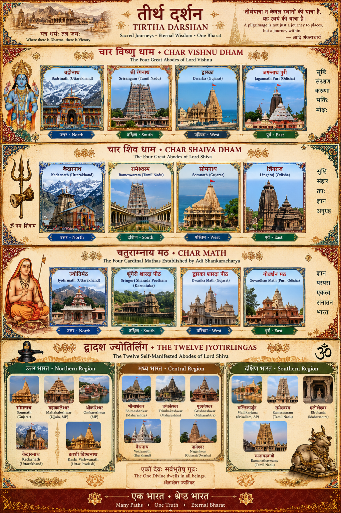

Badrinath
Badrinath is dedicated to Vishnu as Badrinarayan beside the Alaknanda in the Garhwal Himalaya. It is itself one of the established Char Dham and also belongs to Uttarakhand's Himalayan circuit.
A visual and documented journey through sacred landscapes, temples and institutions. Devotional tradition and historical evidence are presented together, but clearly distinguished.
The established pan-Indian Char Dham consists of Badrinath, Dwarka, Jagannath Puri and Rameswaram, spanning the northern Himalaya, western coast, eastern coast and southern island landscape. It is distinct from Uttarakhand's Himalayan Char Dham circuit.

The following uploaded artwork gathers the four Vishnu-oriented regional kshetras selected for this project, four corresponding Shaiva kshetras, the four cardinal Mathas of the Shankara tradition, and the twelve Jyotirlingas. The categories below explain each group separately so that the artwork does not blur distinct pilgrimage traditions.

This is a Shades of Bharat editorial four-direction grouping, not a claim that a universally canonical scripture names these four as a separate “Char Vishnu Dham.” It places four eminent Vishnu traditions across the cardinal landscape.
Badrinath is dedicated to Vishnu as Badrinarayan beside the Alaknanda in the Garhwal Himalaya. It is itself one of the established Char Dham and also belongs to Uttarakhand's Himalayan circuit.
Srirangam centres on Vishnu as reclining Ranganatha. Its vast temple-city between branches of the Kaveri is one of the foremost Sri Vaishnava sacred centres and the first of the Divya Desams in traditional enumeration.
Dwarka is the western Char Dham, centred on Krishna as Dwarkadhish. Its coastal setting at the Gomti and Arabian Sea connects Krishna devotion with the maritime sacred geography of Saurashtra.
Puri's Purushottama Kshetra centres on Jagannath with Balabhadra and Subhadra. The present monumental temple is associated with the Eastern Ganga period, while Ratha Yatra and extensive seva traditions sustain its living ritual identity.
This companion four-direction arrangement is likewise an editorial geographic presentation. Kedarnath, Rameswaram and Somnath participate in the Jyotirlinga tradition; Lingaraj is an eminent Kalinga Shaiva temple whose Harihara character also expresses the meeting of Shaiva and Vaishnava traditions.
Kedarnath stands in the high Garhwal Himalaya and is revered among the twelve Jyotirlingas. Its sacred narratives are linked with the Pandavas, while the stone shrine forms the focus of an arduous Himalayan pilgrimage.
Ramanathaswamy at Rameswaram joins two great networks: the pan-Indian Char Dham and the Jyotirlinga tradition. Temple tradition connects the kshetra with Rama's worship of Shiva; the complex is renowned for its corridors and sacred tirthas.
Somnath on the Saurashtra coast is traditionally placed first in enumerations of the twelve Jyotirlingas. The site has a long history of destruction and rebuilding; the present temple is a twentieth-century reconstruction inaugurated in 1951.
Lingaraj Temple is one of Bhubaneswar's defining monuments of mature Kalinga architecture. Its presiding form is associated with Harihara, combining Shiva and Vishnu, making the temple especially significant within Odisha's layered sacred landscape.
The four cardinal monastic seats are traditionally associated with Adi Shankaracharya. Their institutional traditions connect philosophical teaching with the four directions of Bharat. Traditional foundation accounts are respected here without treating every conventional date as independently verified chronology.
The northern seat, historically associated with the Himalayan sacred region and Badrinath. It is also widely called Joshimath/Jyotish Peeth.
The southern Peetham stands at Sringeri on the Tunga River and centres a long intellectual and devotional tradition around Sharadamba and Advaita Vedanta.
The western monastic seat is associated with Dwarka and the Shankara tradition's western direction, linking monastic lineage with the Krishna kshetra of the Saurashtra coast.
Govardhan Math at Puri is the eastern seat in the four-Matha tradition and is closely situated within the sacred world of Jagannath's Purushottama Kshetra.
The Jyotirlinga tradition reveres twelve especially important manifestations of Shiva. For visual clarity, the twelve are arranged below into three geographic frames. This three-frame division is a modern geographic aid for this website—not a scriptural subdivision of the twelve.
Textual-geographical caution: modern pilgrimage lists are consistent about the twelve names, but the geographical identification of some names—especially Vaidyanatha and Nagesha/Nageshvara—has competing regional traditions. Shades of Bharat will identify these variants explicitly when the individual Jyotirlinga profiles are developed rather than presenting a disputed location as uncontested fact.
Editorial note: “Four Vishnu Kshetras,” “Four Shaiva Kshetras,” and the three geographical Jyotirlinga frames are visual/editorial structures created for this project. They should not be confused with the canonical Char Dham or with a scriptural threefold division of the Jyotirlingas.